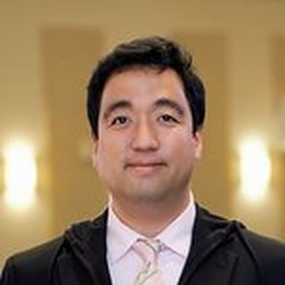

예배 Worship
거룩한 주일의 예배와 삶의 예배로 하나님을 영화롭게 하는 예배 공동체입니다.
에덴 장로교회는 미국 오레곤주 포틀랜드 비버튼 지역에 위치한 교회이며, 미국 PCA 교단(장로교)에 소속되어 있습니다.
에덴 교회는 하나님께서 계시하여 주신 성경 66권이 정확무오한 하나님의 말씀이며, 우리의 구원과 믿음의 진보를 위해 주신 특별한 은혜의 방편임을 믿습니다. 교회의 머리가 되신 예수 그리스도만이 우리의 영원한 구주이심을 고백하며, 예수님을 이 땅에 보내신 하나님 아버지의 은혜를 감사하고, 매일 우리 안에 동행하시는 성령님이 인도하시는 삼위일체 하나님의 구원을 믿습니다.
Eden Presbyterian Church of Oregon is a PCA congregation in Beaverton. We believe the 66 books of Scripture are the inerrant Word of God, we confess Jesus Christ alone as our eternal Savior and Head of the Church, and we trust in the salvation of the Triune God.
예배, 전도/선교, 성장/성숙이 하나님의 말씀과 기도를 통한 성령의 역사 속에 이루어짐을 믿습니다.
거룩한 주일의 예배와 삶의 예배로 하나님을 영화롭게 하는 예배 공동체입니다.
지역의 영혼과 미전도 종족에게 땅 끝까지 복음을 전하며 주님 다시 오실 길을 예비합니다.
하나님의 말씀으로 믿음이 자라고, 내적 변화와 성령의 열매가 삶에 충만하기를 힘씁니다.
교회의 머리가 되신 예수 그리스도의 말씀을 받들어 우리 한 사람 한 사람이 성전이 되며, 성전인 성도들이 모여 교회를 이루고, 교회 없는 세상에 성전으로 살아가는 성도들의 삶이 있는 교회가 되고자 노력합니다.
특별히 다양한 문화의 민족들이 함께 살아가는 미주 지역의 교회로서 다른 민족에게도 복음을 전하는 다민족 교회의 꿈을 꾸며, 복음이 들어가지 않은 미전도 종족에게 예수 그리스도의 십자가와 부활의 복음을 전하여 그곳에도 교회가 세워지는 진정한 선교적 교회가 되기를 소망합니다.

1995년 6명의 성도로 시작해 30년을 이어온 하나님의 은혜의 발자취입니다.
주일예배 오전 9:30 · 11:30 · 여러분을 진심으로 환영합니다.
Join us this Sunday — you are always welcome.